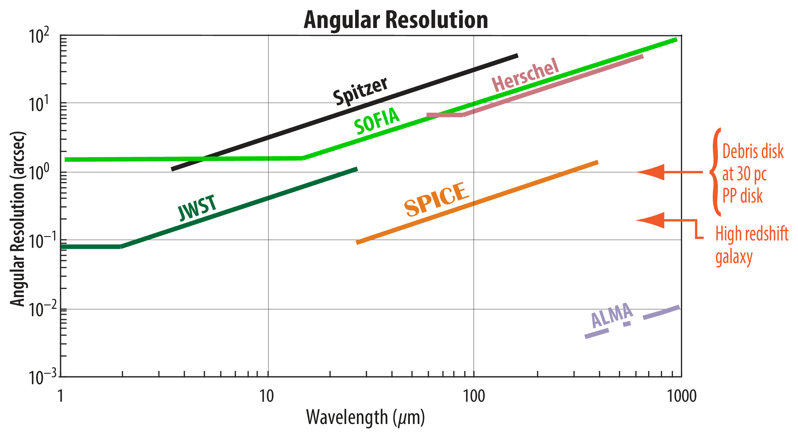
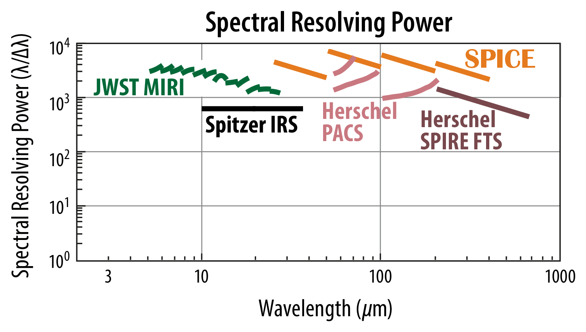

Capability Comparison
Slide right for a Herschel view of the deep universe and left for the corresponding SPICE view. With Herschel, a 3.5-m telescope, the extragalactic sky was a blur. SPICE measures the spectra of individual galaxies out to high redshifts, enabling us to learn how they evolved.
Slide right for a Herschel view of the LkCa15 protoplanetary disk at a wavelength of 100 microns, and slide left for the corresponding SPICE view. SPICE maps the water ice and gas contents of a large sample of known protoplanetary disks to help us understand how planets form and how some planets, like Earth, acquire their life-enabling water.
Slide right for a Herschel view of the Fomalhaut debris disk as if it were relocated to a distance of 100 parsecs, and slide left for the corresponding SPICE view. SPICE discerns the structure in a large sample of known debris disks. Just as the structure in Saturn's rings revealed the presence of moons, debris disk structure reveals the presence of planets. Thus, SPICE enables us to study planetary system architectures and place the solar system in context.
SPICE has the same sub-arcsecond angular resolution as the James Webb Space Telescope (JWST), but at ten times longer wavelengths. SPICE has more than an order of magnitude better resolution than any other far-infrared observatory.
With its cryo-cooled optical system and modern detector technology, SPICE offers an order of magnitude improvement in sensitivity over Herschel, the largest far-infrared telescope flown to date. A deep exposure with SPICE will provide the sensitivity needed to detect spectral lines and continuum emission from distant galaxies, informing us of their physical conditions and heavy element content and distinguishing between star formation activity and that of a central supermassive black hole.

SPICE measures a spectrum in every spatial pixel. The spectral resolving power is >3000 at all wavelengths. This is comparable to the resolving power of the mid-infrared instrument, MIRI, on JWST and two of Herschel’s instruments, PACS and SPIRE, because this resolution will enable SPICE to achieve its scientific objectives.
